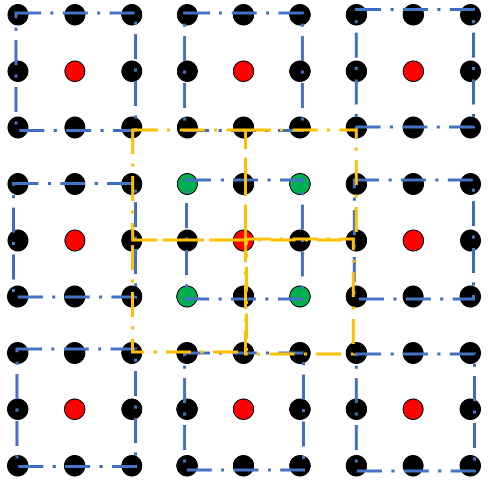
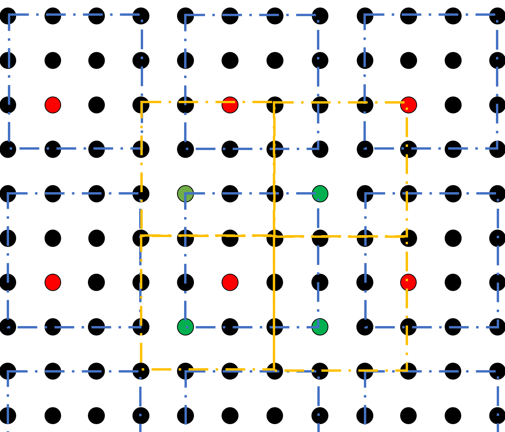
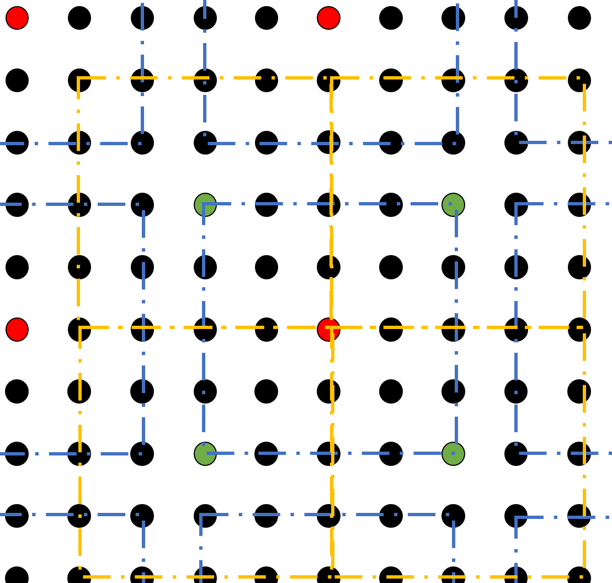
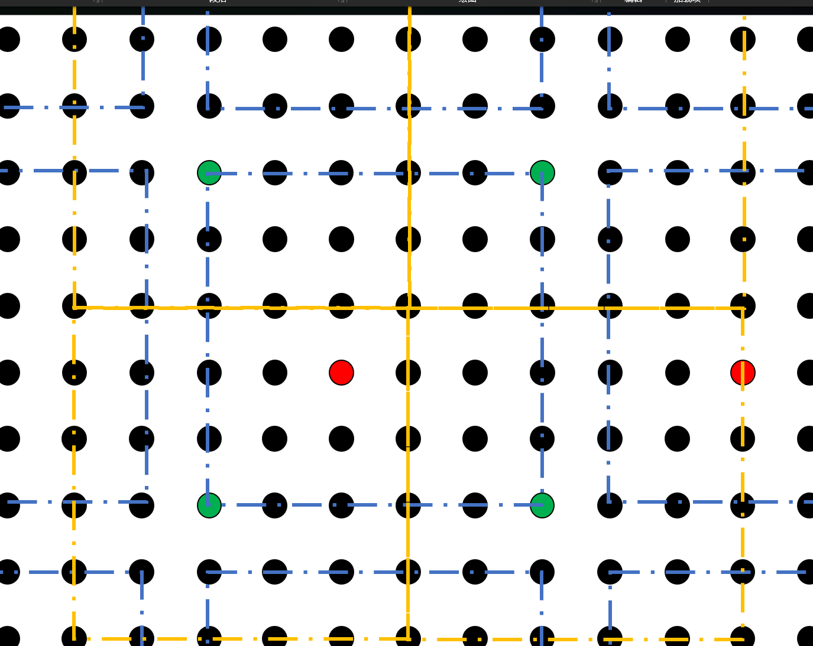

长程周期格子的注意事项¶
对于短程相互作用的格子，我们通常采用周期性边界条件，这一点似乎是很自然的事情，似乎没有任何 non-trivial 的地方。然而一旦引入次近邻，或是任意形态分布的长程相互作用的话，情况似乎变得 subtle. 这里从 SW 算法和 Percolation 的加键过程入手，说明长程相互作用的微妙特性，即给予一种规范。
相互作用与奇偶格子¶
由于空间是封闭的 (周期性边条)，对于格点 $i$ 而言， 若总的格点数为 $N$, 则真正有效作用的格点为 $N-1$, 即除了格点 $i$ 以外的其他所有格点。通常，每个格点并没有特殊性，从而算法上必须保证每个格点所处的环境完全一致。
这里的 “有效” 指的是不考虑镜像的情况。
具体来说，对于 $O(N)$ 模型，我们可以写出哈密顿量： $$ H = - \sum_{i} \sum_{j<i} \frac{1}{r_{i,j}^{\sigma+d}}\vec{s}_i\cdot \vec{s}_j , $$ 可以看出，对于一个格点来说，其需要与另外的所有格点相互作用，就有限系统而言，正如上述与另外 $N-1$ 个格点相互作用即可，我们认为这样的做法是朴素的，也是我们推荐的做法。然而，也有的做法是通过加镜像，将相互作用的范围变的更大，从 $N-1$ 扩大到其整数倍，以此减小有限尺寸效应。(但要注意的是，扩充之后要保证不能与自己的镜像格点发生相互作用)
另一个值得讨论的问题是奇偶边长格点的问题，如下图，列举了 $L = 3,4,5,6$ 四种大小的格子在周期性边条下的示意图：    
{kind=link}
{kind=link}
{kind=link}
{kind=link}
我们不难发现，
长程的 SW 算法¶
如果从 SW 算法的视角来看，即将相互作用看成键 (bond) 的话，对于具有 $N$ 个格点的系统，需要加键的数量为： $$\frac{N(N-1)}{2}$$ 即每个格点都放相同数量的键，但由于需要考虑 double counting，故平均下来每个格点需要放 $\frac{N-1}{2}$ 个键。
{kind=link}
{kind=link}
长程的 Percolation 加键¶
{kind=link}
{kind=link}
{kind=link}
$$ 0\times(1-p)^2 + 2\times 1\times p(1-p) + 2 \times p^2 = \frac{1}{2}\times 2$$
$$ 0\times(1-\tilde{p})^2 + 2\times 1\times \tilde{p}(1-\frac{3}{4}\tilde{p}) + 2 \times \frac{1}{2}\tilde{p}^2 = \frac{1}{2}\times 2$$